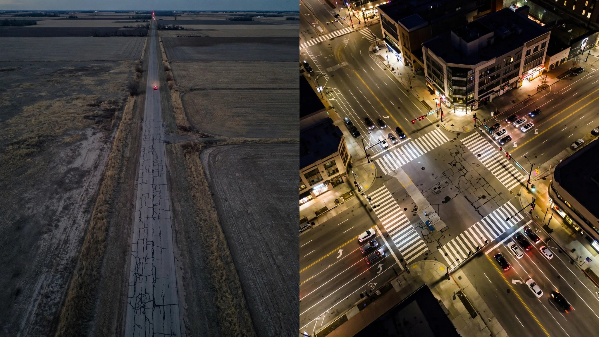

Urban America Cut Road Deaths 10%. Rural America Cut Them 2%. One Road Type Got Worse.

NHTSA just released its full-year 2025 sub-category breakdown, and buried in Table 1 is a number that should end every celebration about declining road deaths. Rural interstate fatalities increased 1 percent from 2024 to 2025, making it the only road classification in America where more people died than the year before.[1]
The national headline is genuinely good: 36,640 people died on American roads in 2025, down 6.7 percent from 39,254 in 2024. The fatality rate fell to 1.10 per 100 million vehicle miles traveled. By the first quarter of 2026, that rate dipped to 0.99. Progress.
But the progress has an address. Urban fatalities dropped 10 percent. Urban interstates fell 10 percent. Urban arterials plunged 12 percent. Rural areas managed a 2 percent decline. Rural interstates went the wrong direction entirely. The safety revolution is not arriving by mail to everyone equally.
Run the counterfactual. Rural areas account for roughly half of all U.S. traffic fatalities despite holding about 19 percent of the population.[2] In 2025, that means approximately 18,000 rural deaths. If rural areas had matched the 10 percent urban decline instead of their 2 percent, around 1,440 additional people survive the year. That is four people a day who die in a geography gap, not a technology gap.
Why? Every major safety advance of the past decade works best where infrastructure supports it. AEB needs lane markings and lighting to see pedestrians. ESC keeps you on a road that has a shoulder to recover onto. Lane-keeping assist requires painted lines that rural county roads often lack. And when a crash does happen at mile marker 87 on a two-lane state highway, the nearest trauma center can be 45 minutes by helicopter. NHTSA's own report notes that the overall rate improvement was "strongly driven" by declines on rural arterials and urban arterials. The improvements that reached rural roads came from the road types closest to towns. The interstates between towns got deadlier.
FARS data adds a vehicle-level dimension. Pickups account for 41,593 deaths in the dataset and dominate rural VMT.[3] Full-size trucks are driven faster, farther, and more often on the undivided two-lane roads where head-on collisions kill at rates urban fender-benders cannot touch. The pickup's body-on-frame design, higher center of gravity, and aggressive front geometry compound the risk for everyone outside the cab.
None of this is inevitable. Australia cut rural road deaths 38 percent over the last decade with wire rope barriers, rumble strips, and speed reductions on undivided highways. Sweden's Vision Zero program treats rural two-lane roads as design problems, not driver problems, separating opposing traffic with cable barriers even on low-volume routes. America spent the decade adding ADAS features to new cars and watched the benefit concentrate in cities where the infrastructure was already good enough to make the technology work.
So 36,640 dead, and the national rate below 1.0 for the first time since 2011. Pop the champagne if you live in a metro area. If your commute involves a two-digit state route, you are statistically no safer than you were last year. Possibly less.
Sources & References
- NHTSA, Early Estimates of Motor Vehicle Traffic Fatalities and Fatality Rate by Sub-Categories in 2025, DOT HS 813 829, July 2026. crashstats.nhtsa.dot.gov
- U.S. Census Bureau, Urban and Rural Population by State, 2020 Census. census.gov
- NHTSA, Fatality Analysis Reporting System (FARS), 2014–2023. nhtsa.gov
Limitations: NHTSA's sub-category estimates for 2025 use ratio-adjusted inflation from partially coded FARS data; final numbers may shift. "Rural" and "urban" follow FHWA functional classification, not Census urban-area definitions, so boundary effects exist at metro edges. The 1,440-life counterfactual assumes a uniform 10 percent decline is achievable across all rural road types, which overstates the realistic short-term gain since rural interstates and low-volume collectors face different intervention sets. FARS vehicle-level data covers 2014-2023 and cannot isolate rural-only VMT by model.
Counterargument: Rural fatality rates have always been higher due to speed, distance, and EMS response times. A 2 percent decline in a structurally disadvantaged environment may represent equivalent effort to a 10 percent urban decline, because urban areas benefit from network effects (one intersection redesign saves multiple lives) that rural roads cannot replicate. The rural interstate increase may also reflect increased freight VMT post-pandemic rather than a safety regression. Fair points. But the gap is widening, not narrowing, and "it was always bad" is not a policy defense after a decade of ADAS investment that bypassed the roads where people actually die.
What to do: If you drive rural interstates regularly, maintain following distance and avoid driving between 6 p.m. and 6 a.m., when NHTSA data shows nighttime fatality proportions were elevated in most months of 2025. Check your vehicle's AEB calibration; camera-only systems degrade on roads without lane markings or overhead lighting. And if you are shopping for a vehicle that will spend most of its life on two-lane highways, prioritize models with IIHS Good headlight ratings. On a dark rural road, your headlights are the only safety system that works without infrastructure.